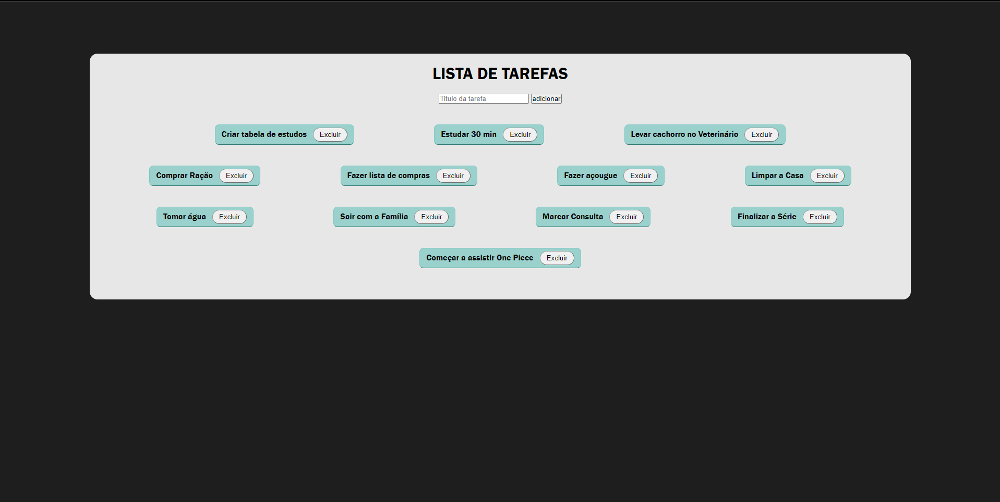

Desafios
Timer v1.1

Lista de Tarefas v1.3
Calculadora v1.5

![Na imagem um Retangulo, em pé, verde, com um visor na parte de cima onde os numeros aparecem, abaixo os botões da calculadora. Estão em fila, 5 linhas de botões, cada linha possui 4 botões. Por ordem da esquerda para direita, botão c, botão abrir parenteses, botão fechar parenteses, botão barra (divisão na programação), na linha seguinte, botão 7, botão 8, botão 9, botão asterisco (multiplicação na programação), na linha seguinte, botão 4, botão 5, botão 6, botão mais para somar, na linha seguinte botão 1, botão 2, botão 3, botão menos para subtrair, na linha seguinte, botão de ponto(virgula para casas decimais), botão 0, botão com dois menor que (usado para apagar o ultimo numero ou operador adicionado ao visor), botão resultado. Abaixo um paragrafo escrito 'Sem suporte para abre parenteses, fecha parenteses e ponto. Atualizações Futuras.'](./images/desafio-calculadora.png)